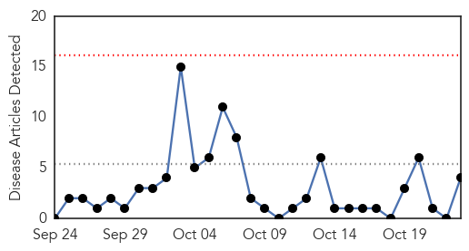
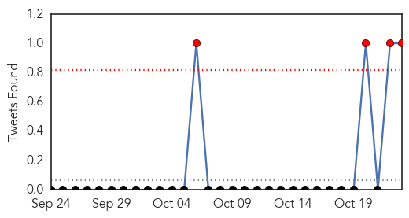
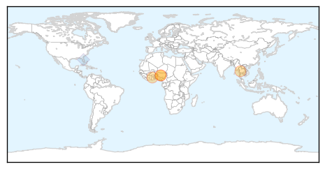
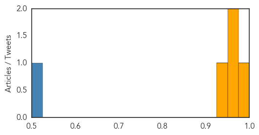
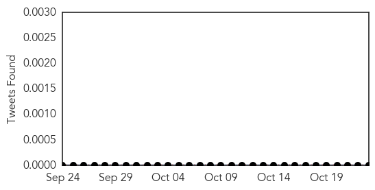

MERS
30-Day Web Trend
0 alerts, 0 warnings

30-Day Twitter Trend
4 alerts, 0 warnings

Article Locations
Article Confidences
Top Articles:
- 0.990
- South Korea reports two more deaths from Mers, three new cases
- 0.953
- FNB News - USAID backs FAO efforts to combat animal disease threats with $87 m funding
- 0.953
- U.S. backs FAO efforts to combat global animal disease threats with $87 million
- 0.942
- US Pledges $87 million to Combating Global Animal Disease Threats
Top Tweets:
- 0.508
- RT: The MERS|camel series rolls on at VirolDU. Markets that deal in camels may help spread MERS-CoV Qatar variants..https://t.…
West Nile Virus
30-Day Web Trend
0 alerts, 0 warnings
30-Day Twitter Trend
0 alerts, 0 warnings

Article Locations

Article Confidences

Top Articles:
-
No articles found for Oct 23, 2015
Top Tweets:
-
No tweets found for Oct 23, 2015